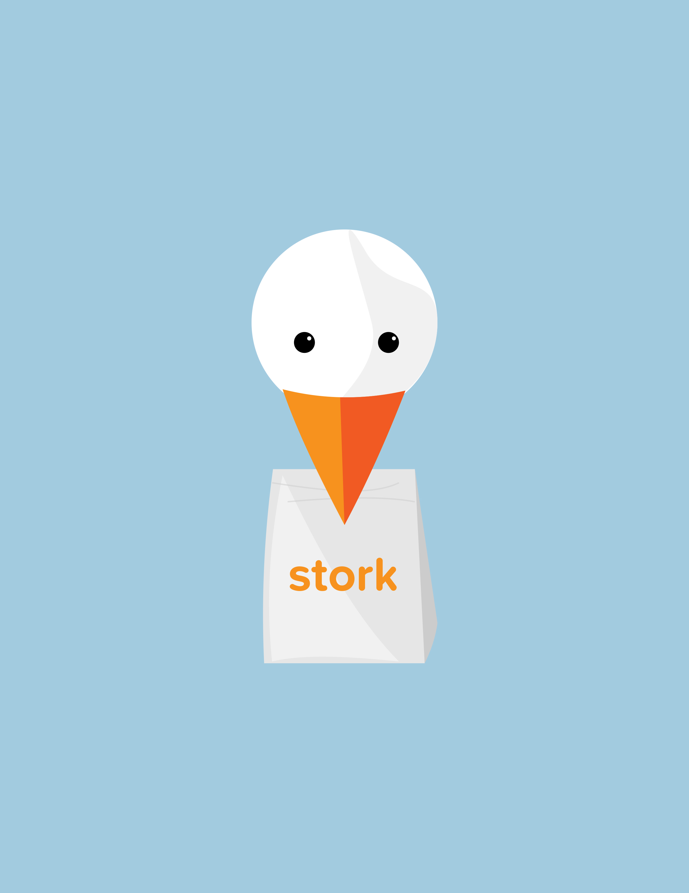

About Stork
Optimizing convenience.
Join UsMission Statement
To help college students accomplish tasks quickly and effectively and to provide a source of revenue at their convenience.
Our Solution
Stork: crowdsourced on-demand errand running for college kids. Using a mobile application, we can revolutionize the way students at universities accomplish tasks. Students place requests for food/convenience items or tasks like printing that can then be carried out by other students for a small fee.
Our onboarding process is the dual verification of a .edu address and using a Facebook social login. Ideally, with this dual verification, students can start delivering the same day they download the app. This provides them a revenue stream when it’s convenient for them. Additionally, students can now request help, be it getting dinner, printing something out, or picking up some toothpaste. The idea being that if everyone is a Stork, wait times are much shorter, and it's more likely that your request is convenient for someone to fulfill.
Value Proposition
The convenience of having anything delivered is obvious. Stork boasts many improvements over other delivery services like OrderUp or Grubhub, the most prevalent is that we are not hindered by partnerships. The Stork enters an establishment as an individual and simply places an extra order in the form of the request. Additionally the population of Storks should be greater than the amount of deliverers so Stork wait times should be considerably less than traditional delivery services. There is also no inherent delivery minimum, the request just needs to be enough of an incentive for a Stork to take it.
The less obvious benefits comes to the Storks: no onboarding makes it convenient to be a Stork, providing them with extra money in the pocket, for only a little bit of extra work. Imagine picking up an extra burrito and dropping it off on your way home - you've gotten your meal for nearly half off for little to no work.
